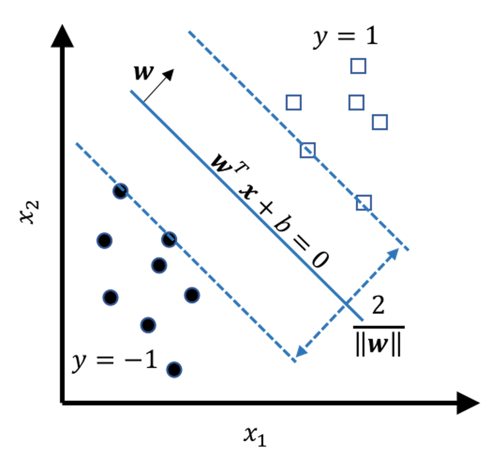
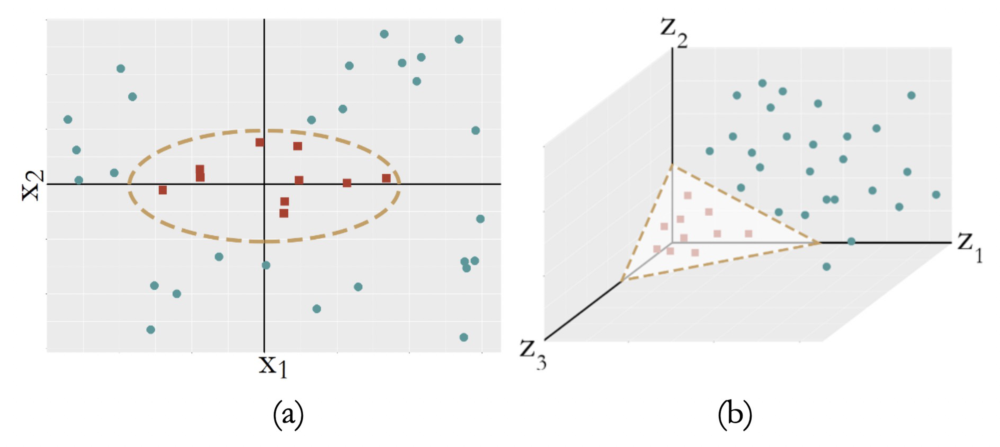
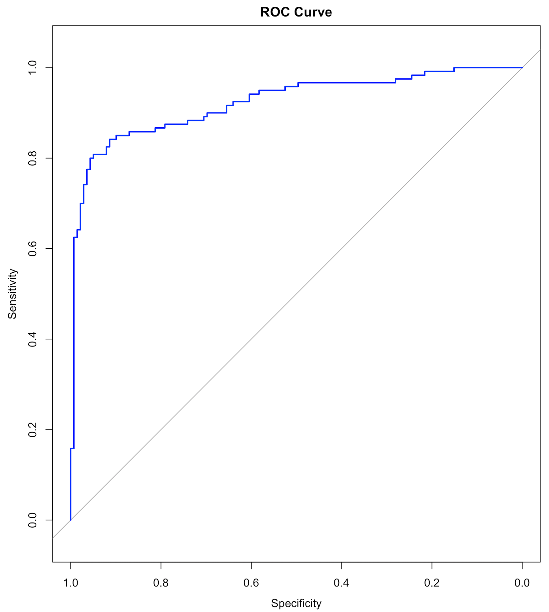

Support vector machine
Rationale and formulation
A learning algorithm has an objective function and sometimes a set of constraints. The objective function corresponds to a quality of the learned model that could help it succeed on the unseen testing data. Eqs. (16), (28), and (40), are examples of objective functions. They are developed based on the likelihood principle. Besides the likelihood principle, researchers have been studying what else quality a model should have and what objective function we should optimize to enhance this quality of the model. The constraints, on the other hand, guard the bottom line: the learned model needs to at least perform well on the training data so it is possible to perform well on future unseen data167 The testing data, while unseen, is assumed to be statistically the same as the training data. This is a basic assumption in machine learning..
 Figure 114: Which model (i.e., here, which line) should we use as our classification model to separate the two classes of data points?
Figure 114: Which model (i.e., here, which line) should we use as our classification model to separate the two classes of data points?
Figure 114 shows an example of a binary classification problem. The constraints here are obvious: the models should correctly classify the data points. And the \(3\) models all perform well, while we hesitate to say that the \(3\) models are equally good. Common sense tells us that Model \(3\) is the least favorable. Unlike the other two, Model \(3\) is close to a few data points. This makes Model \(3\) bear a risk of misclassification on future unseen data: the locations of the existing data points provide a suggestion about where future unseen data may locate; but this is a suggestion, not a hard boundary.
 Figure 115: The model that has a larger margin is better—the basic idea of SVM
Figure 115: The model that has a larger margin is better—the basic idea of SVM
In other words, the line of Model \(3\) is too close to the data points and therefore lacks a safe margin. The concept of margin is shown in Figure 115. To reduce risk, we should have the margin as large as possible. The other two models have larger margins, and Model \(2\) is the best because it has the largest margin.
In summary, while all the models shown in Figure 114 meet the constraints (i.e., perform well on the training data points), this is just the bottom line for a model to be good, and they are ranked differently based on an objective function that maximizes the margin of the model. This is the maximum margin principle invented in SVM.
Theory and method
Derivation of the SVM formulation.
Consider a binary classification problem as shown in Figure 115. At this moment, we consider situations that all data points could be correctly classified by a line, which is clearly the case in Figure 114. This is called the linearly separable case . Denote the data points as \(\left\{\left(x_{n}, y_{n}\right), n=1,2, \dots, N\right\}\). Here, the outcome variable \(y\) is denoted as \(y_n \in \{1,-1\}\), i.e., \(y=1\) denotes the circle points; \(y=-1\) denotes the square points.
The mathematical model to represent a line is \(\boldsymbol{w}^{T} \boldsymbol{x}+b = 0\). Based on this form, we can segment the space into \(5\) regions, as shown in Figure 116. And by looking at the value of \(\boldsymbol{w}^{T} \boldsymbol{x}+b\), we know which region the data point \(\boldsymbol{x}\) falls into. In other words, Figure 116 tells us a classification rule
 Figure 116: The \(5\) regions
Figure 116: The \(5\) regions
\[\begin{equation} \begin{aligned} \text { If } \boldsymbol{w}^{T} \boldsymbol{x}+b>0, \text { then } y=1; \\ \text { Otherwise, } y=-1. \end{aligned} \tag{57} \end{equation}\]
Note that
\[\begin{equation} \begin{gathered} \text{For data points on the margin: } \left|\boldsymbol{w}^{T} \boldsymbol{x}+b\right|=1; \\ \text {For data points beyond the margin: } \left|\boldsymbol{w}^{T} \boldsymbol{x}+b\right|>1. \end{gathered} \tag{58} \end{equation}\]
These two equations in Eq. (58) provide the constraints for the SVM formulation, i.e., the bottom line for a model to be a good model. The two equations can be succinctly rewritten as one
\[ y\left(\boldsymbol{w}^{T} \boldsymbol{x}+b\right) \geq 1. \]
Thus, a draft version of the SVM formulation is
\[\begin{equation} \begin{gathered} \text{*Objective function*: Maximize Margin}, \\ \text { *Subject to*: } y_{n}\left(\boldsymbol{w}^{T} \boldsymbol{x}_{n}+b\right) \geq 1 \text { for } n=1,2, \ldots, N. \end{gathered} \tag{59} \end{equation}\]
The objective function is to maximize the margin of the model. Note that a model is characterized by its parameters \(\boldsymbol{w}\) and \(b\). And the goal of Eq. (59) is to find the model—and therefore, the parameters—that maximizes the margin. In order to carry out this idea, we need the margin to be a concrete mathematical entity that could be characterized by the parameters \(\boldsymbol{w}\) and \(b\)168 Not all good ideas could be readily materialized in concrete mathematical forms. There is no guaranteed mathematical reality and if there is one it is always hard-earned..
 Figure 117: Illustration of the margin as a function of \(\boldsymbol{w}\)
We refer readers to the Remarks section to see details of how the margin is derived as a function of \(\boldsymbol{w}\). Figure 117 shows the result: the margin of the model is \(\frac{2}{\|\boldsymbol{w}\|}\). Here, \(\|\boldsymbol{w}\|^{2} = \boldsymbol{w}^{T} \boldsymbol{w}\). And note that to maximize the margin of a model is equivalent to minimize \(\|\boldsymbol{w}\|\). This gives us the objective function of the SVM model169 Note that here we use \(\|\boldsymbol{w}\|^{2}\) instead of \(\|\boldsymbol{w}\|\). This formulation is easier to solve.
\[\begin{equation} \text {Maximize Margin} = \min _{\boldsymbol{w}} \frac{1}{2}\|\boldsymbol{w}\|^{2}. \tag{60} \end{equation}\]
Thus, the final SVM formulation is
\[\begin{equation} \begin{gathered} \min _{\boldsymbol{w}} \frac{1}{2}\|\boldsymbol{w}\|^{2}, \\ \text { Subject to: } y_{n}\left(\boldsymbol{w}^{T} \boldsymbol{x}_{n}+b\right) \geq 1 \text { for } n=1,2, \ldots, N. \end{gathered} \tag{61} \end{equation}\]
Optimization solution.
Eq. (61) is called the primal formulation of SVM. To solve it, it is often converted into its dual form, the dual formulation of SVM. This could be done by the method of Lagrange multiplier that introduces a dummy variable, \(\alpha_{n}\), for each constraint, i.e., \(y_{n}\left(\boldsymbol{w}^{T}\boldsymbol{x}_{n}+b\right)\geq 1\), such that we could move the constraints into the objective function. By definition, \(\alpha_{n} \geq 0\).
\[ L(\boldsymbol{w}, b, \boldsymbol{\alpha})=\frac{1}{2}\|\boldsymbol{w}\|^{2}-\sum_{n=1}^{N} \alpha_{n}\left[y_{n}\left(\boldsymbol{w}^{T} \boldsymbol{x}_{n}+b\right)-1\right]. \]
This could be rewritten as
\[\begin{equation} L(\boldsymbol{w}, b, \boldsymbol{\alpha}) = \underbrace{\frac{1}{2} \boldsymbol{w}^{T} \boldsymbol{w}}_{(1)} - \underbrace{\sum_{n=1}^{N} \alpha_{n} y_{n} \boldsymbol{w}^{T} \boldsymbol{x}_{n}}_{(2)}-\underbrace{b \sum_{n=1}^{N} \alpha_{n} y_{n}}_{(3)}+\underbrace{\sum_{n=1}^{N} \alpha_{n}}_{(4)}. \tag{62} \end{equation}\]
Then we use the First Derivative Test again: differentiating \(L(\boldsymbol{w}, b, \boldsymbol{\alpha})\) with respect to \(\boldsymbol{w} \text { and } b\), and setting them to \(0\) yields the following solutions
\[\begin{equation} \boldsymbol{w}=\sum_{n=1}^{N} \alpha_{n} y_{n} \boldsymbol{x}_{n}; \tag{63} \end{equation}\]
\[\begin{equation} \sum_{n=1}^{N} \alpha_{n} y_{n}=0. \tag{64} \end{equation}\]
Using the conclusion in Eq. (63), part (1) of Eq. (62) could be rewritten as
\[ \frac{1}{2} \boldsymbol{w}^{T} \boldsymbol{w}=\frac{1}{2} \boldsymbol{w}^{T} \sum_{n=1}^{N} \alpha_{n} y_{n} \boldsymbol{x}_{n}=\frac{1}{2} \sum_{n=1}^{N} \alpha_{n} y_{n} \boldsymbol{w}^{T} \boldsymbol{x}_{n}. \]
It has the same form as part (2) of Eq. (62). The two could be merged together into \(-\frac{1}{2} \sum_{n=1}^{N} \alpha_{n} y_{n} \boldsymbol{w}^{T} \boldsymbol{x}_{n}\). Note that170 I.e., use the conclusion in Eq. (63) again.
\[ \frac{1}{2} \sum_{n=1}^{N} \alpha_{n} y_{n} \boldsymbol{w}^{T} \boldsymbol{x}_{n}=\frac{1}{2} \sum_{n=1}^{N} \alpha_{n} y_{n}\left(\sum_{n=1}^{N} \alpha_{n} y_{n} \boldsymbol{x}_{n}\right)^{T} \boldsymbol{x}_{n}=\frac{1}{2} \sum_{n=1}^{N} \sum_{m=1}^{N} \alpha_{n} \alpha_{m} y_{n} y_{m} \boldsymbol{x}_{n}^{T} \boldsymbol{x}_{m}. \]
Part (3) of Eq. (62), according to the conclusion in Eq. (64), is \(0\).
Based on these results, we can rewrite \(L(\boldsymbol{w}, b, \boldsymbol{\alpha})\) as
\[ L(\boldsymbol{w}, b, \boldsymbol{\alpha})=\sum_{n=1}^{N} \alpha_{n}-\frac{1}{2} \sum_{n=1}^{N} \sum_{m=1}^{N} \alpha_{n} \alpha_{m} y_{n} y_{m} \boldsymbol{x}_{n}^{T} \boldsymbol{x}_{m}. \]
This is the objective function of the dual formulation of Eq. (61). The decision variables are the Lagrange multipliers, the \(\boldsymbol{\alpha}\). By definition the Lagrange multipliers should be non-negative, and we have the constraint of the Lagrange multipliers described in Eq. (64). All together, the dual formulation of the SVM model is
\[\begin{equation} \begin{gathered} \max _{\boldsymbol{\alpha}} \sum_{n=1}^{N} \alpha_{n}-\frac{1}{2} \sum_{n=1}^{N} \sum_{m=1}^{N} \alpha_{n} \alpha_{m} y_{n} y_{m} \boldsymbol{x}_{n}^{T} \boldsymbol{x}_{m}, \\ \text { Subject to: } \alpha_{n} \geq 0 \text { for } n=1,2, \dots, N \text {, and } \sum_{n=1}^{N} \alpha_{n} y_{n}=0. \end{gathered} \tag{65} \end{equation}\]
This is a quadratic programming problem that can be solved using many existing well established algorithms.
Support vectors.
The data points that lay on the margins, as shown in Figure 118, are called support vectors . These geometrically unique data points are also found to be numerically interesting: in the solution of the dual formulation of SVM as shown in Eq. (65), the \(\alpha_{n}\)s that correspond to the support vectors are those that are nonzero. In other words, the data points that are not support vectors will have their \(\alpha_{n}\)s to be zero in the solution of Eq. (65).171 Note that each data point contributes a constraint in the primal formulation of SVM, and therefore, corresponds to a \(\alpha_{n}\) in the dual formulation.
If we revisit Eq. (63), we can see that only the nonzero \(\alpha_n\) contribute to the estimation of \(\boldsymbol{w}\). Indeed, Figure 118 shows that support vectors are sufficient to geometrically define the margins. And if we know the margins, the decision boundary is determined, i.e., as the central line in the middle of the two margins.
 Figure 118: Support vectors are the data points that lay on the margins. In other words, the support vectors define the margins.
Figure 118: Support vectors are the data points that lay on the margins. In other words, the support vectors define the margins.
The support vectors hold crucial implications for the learned model. Theoretical evidences showed that the number of support vectors is a metric that can indicate the “healthiness” of the model, i.e., the smaller the total number of support vectors, the better the model. It also reveals that the main statistical information of a given dataset the SVM model uses is the support vectors. The number of support vectors is usually much smaller than the number of data points \(N\). Some works have been inspired to accelerate the SVM model training by discarding the data points that are probably not support vectors172 If we can screen the data points before we solve Eq. (65) by discarding some data points that are not support vectors, the size of the optimization problem in Eq. (65) could be reduced.. To understand why the nonzero \(\alpha_n\) correspond to the support vectors, interested readers can find the derivation in the Remarks section.
Summary. After solving Eq. (65), we obtain the solutions of \(\boldsymbol{\alpha}\). With that, we estimate the parameter \(\boldsymbol{w}\) based on Eq. (63). To estimate the parameter \(b\), we use any support vector, i.e., say, \((\boldsymbol{x}_{n}, y_n)\), and estimate \(b\) by
\[\begin{equation*} \text{If } y_n = 1, b=1-\boldsymbol{w}^{T} \boldsymbol{x}_{n}; \end{equation*}\]
\[\begin{equation} \text{If } y_n = -1, b=-1-\boldsymbol{w}^{T} \boldsymbol{x}_{n}.\tag{66} \end{equation}\]
Extension to nonseparable cases.
We have assumed that the two classes are separable. Since this is impossible in some applications, we revise the SVM formulation—specifically, to revise the constraints of the SVM formulation—by allowing some data points to be within the margins or even on the wrong side of the decision boundary.
 Figure 119: Behaviors of the slack variables
Figure 119: Behaviors of the slack variables
Note that the original constraint structure in Eq. (61) is derived based on the linearly separable case shown in Figure 114. For the nonseparable case, Figure 119 shows three scenarios: the Type A data points fall within the margins but still on the right side of their class, the Type B data points fall on the wrong side of their class, and the Type C data points fall on the right side of their class and also beyond or on the margin.
The Type A data points and the Type B data points are both compromised, and we introduce a slack variable to describe the degree of compromise for both types of data points.
For instance, consider the circle points that belong to the class (\(y_n=1\)), we have173 Readers may revisit Figure 116 to understand Eq. (67).
\[\begin{equation} \begin{gathered} \text {Data points (Type A): } \boldsymbol{w}^{T} \boldsymbol{x}_{n}+b \in (0,1); \\ \text {Data points (Type B): } \boldsymbol{w}^{T} \boldsymbol{x}_{n}+b < 0. \end{gathered} \tag{67} \end{equation}\]
Then we define a slack variable \(\xi_{n}\) for any data point \(n\) of Types A or B
\[ \text {The slack variable $\xi_{n}$}: \xi_{n} = 1 - \left(\boldsymbol{w}^{T} \boldsymbol{x}_{n}+b\right). \]
And we define \(\xi_{n}\) for any data point of Type C to be \(0\) since there is no compromise.
All together, as shown in Figure 119, we have
\[\begin{equation} \begin{gathered} \text {Data points (Type A): } \xi_{n} \in (0,1]; \\ \text {Data points (Type B): } \xi_{n} > 1; \\ \text {Data points (Type C): } \xi_{n}=0. \end{gathered} \tag{68} \end{equation}\]
Similarly, for the square points that belong to the class (\(y= -1\)), we define a slack variable \(\xi_{n}\) for each data point \(n\)
\[ \text {The slack variable $\xi_{n}$}: \xi_{n} = 1 + \left(\boldsymbol{w}^{T} \boldsymbol{x}_{n}+b\right). \]
The same result in Eq. (68) could be derived.
As the slack variable \(\xi_{n}\) describes the degree of compromise for the data point \(\boldsymbol{x}_{n}\), an optimal SVM model should also minimize the total amount of compromise. Based on this additional learning principle, we revise the objective function in Eq. (61) and get
\[\begin{equation} \underbrace{\min _{\boldsymbol{w}} \frac{1}{2}\|\boldsymbol{w}\|^{2}}_{\text{*Maximize Margin*}} + \underbrace{C \sum_{n=1}^{N} \xi_{n}.}_{\text{*Minimize Slacks*}} \tag{69} \end{equation}\]
Here, \(C\) is a user-specified parameter to control the balance between the two objectives: maximum margin and minimum sum of slacks.
Then we revise the constraints174 I.e., use the results in Figure 116 and Figure 119. to be
\[ y_{n}\left(\boldsymbol{w}^{T} \boldsymbol{x}_{n}+b\right) \geq 1-\xi_{n} \text {, for } n=1,2, \dots, N. \tag{70} \]
Putting the revised objective function and constraints together, the formulation of the SVM model for nonseparable case becomes
\[\begin{equation} \begin{gathered} \min _{\boldsymbol{w}} \frac{1}{2}\|\boldsymbol{w}\|^{2}+C \sum_{n=1}^{N} \xi_{n}, \\ \text { Subject to: } y_{n}\left(\boldsymbol{w}^{T} \boldsymbol{x}_{n}+b\right) \geq 1-\xi_{n}, \\ \xi_{n} \geq 0, \text { for } n=1,2, \ldots, N. \end{gathered} \tag{71} \end{equation}\]
A dual form that is similar to Eq. (65) could be derived, which is skipped here175 Interested readers could read this book for a comprehensive and deep understanding of SVM: Scholkopf, B. and Smola, A.J., Learning with Kernels: Support Vector Machines, Regularization, Optimization, and Beyond. MIT Press, 2001..
Extension to nonlinear SVM.
Sometimes, the decision boundary could not be characterized as linear models, i.e., see Figure 120 (a).
Figure 120: (a) A nonseparable dataset; (b) with the right transformation, (a) becomes linearly separable
A common strategy to create a nonlinear model is to conduct transformation of the original variables. For Figure 120 (a), we conduct a transformation from the original two-dimensional coordinate system \(\boldsymbol{x}\) to a new coordinate system \(\boldsymbol{z}\) that is three-dimensional
\[\begin{equation} z_{1}=x_{1}^{2}, z_{2}=\sqrt{2} x_{1} x_{2}, z_{3}=x_{2}^{2}. \tag{72} \end{equation}\]
In the new coordinate system, as shown in Figure 120 (b), the data points of the two classes become linearly separable.
The transformation employed in Eq. (72) is explicit, which may not be suitable for applications where we don’t know what is a good transformation176 Try a ten-dimensional \(\boldsymbol{x}\) and see how troublesome it is to define an explicit transformation to enable linear separability of the classes.. Thus, transformation that could be automatically identified by the learning algorithm is needed, even if the transformation is implicit. A remarkable thing about SVM is that its formulation allows automatic transformation.
Let’s revisit the dual formulation of SVM for the linearly separable case, as shown in Eq. (65). Assume that the transformation has been performed and now we build the SVM model based on the transformed features, \(\boldsymbol{z}\). The dual formulation of SVM on the transformed variables is
\[\begin{equation} \begin{gathered} \max _{\boldsymbol{\alpha}} \sum_{n=1}^{N} \alpha_{n}-\frac{1}{2} \sum_{n=1}^{N} \sum_{m=1}^{N} \alpha_{n} \alpha_{m} y_{n} y_{m} \boldsymbol{z}_{n}^{T} \boldsymbol{z}_{m}, \\ \text { Subject to: } \alpha_{n} \geq 0 \text { for } n=1,2, \dots, N, \\ \sum_{n=1}^{N} \alpha_{n} y_{n}=0. \end{gathered} \tag{73} \end{equation}\]
It can be seen that, the dual formulation of SVM doesn’t directly concern \(\boldsymbol{z}_{n}\). Rather, only the inner product of \(\boldsymbol{z}_{n}^{T} \boldsymbol{z}_{m}\) is needed. As \(\boldsymbol{z}\) is essentially a function of \(\boldsymbol{x}\), i.e., denote it as \(\boldsymbol{z}=\phi(\boldsymbol{x})\), \(\boldsymbol{z}_{n}^{T} \boldsymbol{z}_{m}\) is essentially a function of \(\boldsymbol{x}_{n} \text { and } \boldsymbol{x}_{m}\). We can write it up as \(\boldsymbol{z}_{n}^{T} \boldsymbol{z}_{m}=K\left(\boldsymbol{x}_{n}, \boldsymbol{x}_{m}\right)\). This is called the kernel function .
A kernel function is a function that entails a transformation \(\boldsymbol{z}=\phi(\boldsymbol{x})\) such that \(K\left(\boldsymbol{x}_{n}, \boldsymbol{x}_{m}\right)\) is an inner product: \(K\left(\boldsymbol{x}_{n}, \boldsymbol{x}_{m}\right)=\phi(\boldsymbol{x}_{n})^{T} \phi(\boldsymbol{x}_{m})\). In other words, we now do not seek explicit form of \(\phi(\boldsymbol{x}_{n})\); rather, we seek kernel functions that entail such transformations177 If a kernel function is proven to entail a transformation function \(\phi(\boldsymbol{x})\)—even it is only proven in theory and never really made explicit in practice—it is as good as explicit transformation, because only the inner product of \(\boldsymbol{z}_{n}^{T} \boldsymbol{z}_{m}\) is needed in Eq. (73)..
Many kernel functions have been developed. For example, the Gaussian radial basis kernel function is a popular choice
\[ K\left(\boldsymbol{x}_{n}, \boldsymbol{x}_{m}\right)=e^{-\gamma\left\|\boldsymbol{x}_{n}-\boldsymbol{x}_{m}\right\|^{2}}, \]
where the transformation \(\boldsymbol{z}=\phi(\boldsymbol{x})\) is implicit and is proved to be infinitely long178 Which means it is very flexible and can represent any smooth function..
The polynomial kernel function is defined as
\[ K\left(\boldsymbol{x}_{n}, \boldsymbol{x}_{m}\right)=\left(\boldsymbol{x}_{n}^{T} \boldsymbol{x}_{m}+1\right)^{q}. \]
The linear kernel function179 For linear kernel function, the transformation is trivial, i.e., \(\phi(\boldsymbol{x}) = \boldsymbol{x}\). is defined as
\[ K\left(\boldsymbol{x}_{n}, \boldsymbol{x}_{m}\right)=\boldsymbol{x}_{n}^{T} \boldsymbol{x}_{m}. \]
With a given kernel function, the dual formulation of SVM is
\[\begin{equation} \begin{gathered} \max _{\boldsymbol{\alpha}} \sum_{n=1}^{N} \alpha_{n}-\frac{1}{2} \sum_{n=1}^{N} \sum_{m=1}^{N} \alpha_{n} \alpha_{m} y_{n} y_{m} K\left(\boldsymbol{x}_{n}, \boldsymbol{x}_{m}\right), \\ \text { Subject to: } \alpha_{n} \geq 0 \text { for } n=1,2, \dots, N, \\ \sum_{n=1}^{N} \alpha_{n} y_{n}=0. \end{gathered} \tag{74} \end{equation}\]
After solving Eq. (74), in theory we could obtain the estimation of the parameter \(\boldsymbol{w}\) based on Eq. (75)
\[\begin{equation} \boldsymbol{w}=\sum_{n=1}^{N} \alpha_{n} y_{n} \phi(\boldsymbol{x_{n}}). \tag{75} \end{equation}\]
However, for kernel functions that we don’t know the explicit transformation function \(\phi(\boldsymbol{x})\), it is no longer possible to write the parameter \(\boldsymbol{w}\) in the same way as in linear SVM models. This won’t prevent us from using the learned SVM model for prediction. For a data point, denoted as \(\boldsymbol{x}_{*}\), we can use the learned SVM model to predict on it180 I.e., combine Eq. (75) and Eq. (57) we could derive Eq. (76).
\[\begin{equation} \begin{gathered} \text { If } \sum_{n=1}^{N} \alpha_{n} y_{n} K\left(\boldsymbol{x}_{n}, \boldsymbol{x}_{*}\right)+b>0, \text { then } y_{*}=1; \\ \text { Otherwise, } y_{*}=-1. \end{gathered} \tag{76} \end{equation}\]
Again, the specific form of \(\phi(\boldsymbol{x})\) is not needed since only the kernel function is used.
A small-data example.
Consider a dataset with \(4\) data points
\[ \begin{array}{l}{\boldsymbol{x}_{1}=(-1,-1)^{T}, y_{1}=-1}; \\ {\boldsymbol{x}_{2}=(-1,+1)^{T}, y_{2}=+1}; \\ {\boldsymbol{x}_{3}=(+1,-1)^{T}, y_{3}=+1} ;\\ {\boldsymbol{x}_{4}=(+1,+1)^{T}, y_{4}=-1.}\end{array} \]
The dataset is visualized in Figure 121. The R code to draw Figure 121 is shown below.
 Figure 121: A linearly inseparable dataset
Figure 121: A linearly inseparable dataset
# For the toy problem
x = matrix(c(-1,-1,1,1,-1,1,-1,1), nrow = 4, ncol = 2)
y = c(-1,1,1,-1)
linear.train <- data.frame(x,y)
# Visualize the distribution of data points of two classes
require( 'ggplot2' )
p <- qplot( data=linear.train, X1, X2,
colour=factor(y),xlim = c(-1.5,1.5),
ylim = c(-1.5,1.5))
p <- p + labs(title = "Scatterplot of data points of two classes")
print(p)It is a nonlinear case. We use a nonlinear kernel function to build the SVM model.
Consider the polynomial kernel function with df=2
\[\begin{equation} K\left(\boldsymbol{x}_{n}, \boldsymbol{x}_{m}\right)=\left(\boldsymbol{x}_{n}^{T} \boldsymbol{x}_{m}+1\right)^{2}, \tag{77} \end{equation}\]
which corresponds to the transformation
\[\begin{equation} \phi\left(\boldsymbol{x}_{n}\right)=\left[1, \sqrt{2} x_{n, 1}, \sqrt{2} x_{n, 2}, \sqrt{2} x_{n, 1} x_{n, 2}, x_{n, 1}^{2}, x_{n, 2}^{2}\right]^{T}. \tag{78} \end{equation}\]
Based on Eq. (65), a specific formulation of the SVM model of this dataset is
\[\begin{equation} \begin{gathered} \max _{\boldsymbol{\alpha}} \sum_{n=1}^{4} \alpha_{n}-\frac{1}{2} \sum_{n=1}^{4} \sum_{m=1}^{4} \alpha_{n} \alpha_{m} y_{n} y_{m} K\left(\boldsymbol{x}_{n}, \boldsymbol{x}_{m}\right), \\ \text { Subject to: } \alpha_{n} \geq 0 \text { for } n=1,2, \dots, 4, \\ \text { and } \sum_{n=1}^{4} \alpha_{n} y_{n}=0. \end{gathered} \tag{79} \end{equation}\]
We calculate the kernel matrix as181 E.g., using Eq. (77), \(K\left(\boldsymbol{x}_{1}, \boldsymbol{x}_{2}\right) = \left(\boldsymbol{x}_{1}^{T} \boldsymbol{x}_{2}+1\right)^{2} = 3^2 = 9\). Readers can try other instances.
\[ \boldsymbol{K}=\left[\begin{array}{cccc}{9} & {1} & {1} & {1} \\ {1} & {9} & {1} & {1} \\ {1} & {1} & {9} & {1} \\ {1} & {1} & {1} & {9}\end{array}\right]. \]
We solve the quadratic programming problem182 I.e., use the R package quadprog. in Eq. (79) and get
\[\begin{equation} \alpha_{1}=\alpha_{2}=\alpha_{3}=\alpha_{4}=0.125. \tag{80} \end{equation}\]
In this particular case, since we can write up the transformation explicitly183 I.e., as shown in Eq. (78), we can write up \(\boldsymbol{w}\) explicitly as well184 It should be written as \(\widehat{\boldsymbol{w}}\), since it is an estimator of \(\boldsymbol{w}\). Here for simplicity we skip this.
\[ \boldsymbol{w}=\sum_{n=1}^{4} \alpha_{n} y_{n} \phi\left(\boldsymbol{x}_{n}\right)=[0,0,0,1 / \sqrt{2}, 0,0]^{T}. \]
For any given data point \(\boldsymbol{x}_{*}\), the explicit decision function is
\[ f\left(\boldsymbol{x}_{*}\right)=\boldsymbol{w}^{T} \phi\left(\boldsymbol{x}_{*}\right)=x_{*, 1} x_{*, 2}. \]
This is the decision boundary for a typical XOR problem185 Also known as exclusive or or exclusive disjunction, the XOR problem is a logical operation that outputs true only when inputs differ (e.g., one is true, the other is false)..
We then use R to build an SVM model on this dataset186 We use the R package kernlab—more details are shown in the section R Lab.. The R code is shown in below.
# Train a nonlinear SVM model
# polynomial kernel function with `df=2`
x <- cbind(1, poly(x, degree = 2, raw = TRUE))
coefs = c(1,sqrt(2),1,sqrt(2),sqrt(2),1)
x <- x * t(matrix(rep(coefs,4),nrow=6,ncol=4))
linear.train <- data.frame(x,y)
require( 'kernlab' )
linear.svm <- ksvm(y ~ ., data=linear.train,
type='C-svc', kernel='vanilladot', C=10, scale=c())The function alpha() returns the values of \(\alpha_{n} \text { for } n=1,2, \dots, 4\). Our results as shown in Eq. (80) are consistent with the results obtained by using R.187 If your answer is different, check if the alpha() function in the kernlab() package scales the vector \(\alpha\), i.e., to make the sum as \(1\).
alpha(linear.svm) #scaled alpha vector
## [[1]]
## [1] 0.125 0.125 0.125 0.125R Lab
The 7-Step R Pipeline. Step 1 and Step 2 get data into R and make appropriate preprocessing.
# Step 1 -> Read data into R workstation
library(RCurl)
url <- paste0("https://raw.githubusercontent.com",
"/analyticsbook/book/main/data/AD.csv")
data <- read.csv(text=getURL(url))
# Step 2 -> Data preprocessing
# Create X matrix (predictors) and Y vector (outcome variable)
X <- data[,2:16]
Y <- data$DX_bl
Y <- paste0("c", Y)
Y <- as.factor(Y)
data <- data.frame(X,Y)
names(data)[16] = c("DX_bl")
# Create a training data (half the original data size)
train.ix <- sample(nrow(data),floor( nrow(data)/2) )
data.train <- data[train.ix,]
# Create a testing data (half the original data size)
data.test <- data[-train.ix,]Step 3 puts together a list of candidate models.
# Step 3 -> gather a list of candidate models
# SVM: often to compare models with different kernels,
# different values of C, different set of variables
# Use different set of variables
model1 <- as.formula(DX_bl ~ .)
model2 <- as.formula(DX_bl ~ AGE + PTEDUCAT + FDG
+ AV45 + HippoNV + rs3865444)
model3 <- as.formula(DX_bl ~ AGE + PTEDUCAT)
model4 <- as.formula(DX_bl ~ FDG + AV45 + HippoNV)Step 4 uses \(10\)-fold cross-validation to evaluate the performance of the candidate models. Below we show how it works for one model. For other models, the same script could be used with a slight modification.
# Step 4 -> Use 10-fold cross-validation to evaluate the models
n_folds = 10
# number of fold
N <- dim(data.train)[1]
folds_i <- sample(rep(1:n_folds, length.out = N))
# evaluate the first model
cv_err <- NULL
# cv_err makes records of the prediction error for each fold
for (k in 1:n_folds) {
test_i <- which(folds_i == k)
# In each iteration, use one fold of data as the testing data
data.test.cv <- data.train[test_i, ]
# The remaining 9 folds' data form our training data
data.train.cv <- data.train[-test_i, ]
require( 'kernlab' )
linear.svm <- ksvm(model1, data=data.train.cv,
type='C-svc', kernel='vanilladot', C=10)
# Fit the linear SVM model with the training data
y_hat <- predict(linear.svm, data.test.cv)
# Predict on the testing data using the trained model
true_y <- data.test.cv$DX_bl
# get the the error rate
cv_err[k] <-length(which(y_hat != true_y))/length(y_hat)
}
mean(cv_err)
# evaluate the second model ...
# evaluate the third model ...
# ...Results are shown below.
## [1] 0.1781538
## [1] 0.1278462
## [1] 0.4069231
## [1] 0.1316923The second model is the best.
Step 5 uses the training data to fit a final model, through the ksvm() function in the package kernlab.
# Step 5 -> After model selection,
# use ksvm() function to build your final model
linear.svm <- ksvm(model2, data=data.train,
type='C-svc', kernel='vanilladot', C=10) Step 6 uses the fitted final model for prediction on the testing data.
# Step 6 -> Predict using your SVM model
y_hat <- predict(linear.svm, data.test)  Figure 122: The ROC curve of the final SVM model
Step 7 evaluates the performance of the model.
# Step 7 -> Evaluate the prediction performance of the SVM model
# (1) The confusion matrix
library(caret)
confusionMatrix(y_hat, data.test$DX_bl)
# (2) ROC curve
library(pROC)
y_hat <- predict(linear.svm, data.test, type = 'decision')
plot(roc(data.test$DX_bl, y_hat),
col="blue", main="ROC Curve")Results are shown below. And the ROC curve is shown in Figure 122.
## Confusion Matrix and Statistics
##
## Reference
## Prediction c0 c1
## c0 131 27
## c1 11 90
##
## Accuracy : 0.8533
## 95% CI : (0.8042, 0.894)
## No Information Rate : 0.5483
## P-Value [Acc > NIR] : < 2e-16
##
## Kappa : 0.7002
##
## Mcnemar's Test P-Value : 0.01496
##
## Sensitivity : 0.9225
## Specificity : 0.7692
## Pos Pred Value : 0.8291
## Neg Pred Value : 0.8911
## Prevalence : 0.5483
## Detection Rate : 0.5058
## Detection Prevalence : 0.6100
## Balanced Accuracy : 0.8459
##
## 'Positive' Class : c0Beyond the 7-Step R Pipeline.
In the 7-step pipeline, we create a list of candidate models by different selections of predictors. There are other parameters, such as the kernel function, the value of \(C\), that should be concerned in model selection. The R package caret can automate the process of cross-validation and facilitate the optimization of multiple parameters simultaneously. Below is an example
library(RCurl)
url <- paste0("https://raw.githubusercontent.com",
"/analyticsbook/book/main/data/AD.csv")
AD <- read.csv(text=getURL(url))
str(AD)
#Train and Tune the SVM
n = dim(AD)[1]
n.train <- floor(0.8 * n)
idx.train <- sample(n, n.train)
AD[which(AD[,1]==0),1] = rep("Normal",length(which(AD[,1]==0)))
AD[which(AD[,1]==1),1] = rep("Diseased",length(which(AD[,1]==1)))
AD.train <- AD[idx.train,c(1:16)]
AD.test <- AD[-idx.train,c(1:16)]
trainX <- AD.train[,c(2:16)]
trainy= AD.train[,1]
## Setup for cross-validation:
# 10-fold cross validation
# do 5 repetitions of cv
# Use AUC to pick the best model
ctrl <- trainControl(method="repeatedcv",
repeats=1,
summaryFunction=twoClassSummary,
classProbs=TRUE)
# Use the expand.grid to specify the search space
grid <- expand.grid(sigma = c(0.002, 0.005, 0.01, 0.012, 0.015),
C = c(0.3,0.4,0.5,0.6)
)
# method: Radial kernel
# tuneLength: 9 values of the cost function
# preProc: Center and scale data
svm.tune <- train(x = trainX, y = trainy,
method = "svmRadial", tuneLength = 9,
preProc = c("center","scale"), metric="ROC",
tuneGrid = grid,
trControl=ctrl)
svm.tuneThen we can obtain the following results
## Support Vector Machines with Radial Basis Function Kernel
##
## 413 samples
## 15 predictor
## 2 classes: 'Diseased', 'Normal'
##
## Pre-processing: centered (15), scaled (15)
## Resampling: Cross-Validated (10 fold, repeated 1 times)
## Summary of sample sizes: 371, 372, 372, 371, 372, 372, ...
## Resampling results across tuning parameters:
##
## sigma C ROC Sens Spec
## 0.002 0.3 0.8929523 0.9121053 0.5932900
## 0.002 0.4 0.8927130 0.8757895 0.6619048
## 0.002 0.5 0.8956402 0.8452632 0.7627706
## 0.002 0.6 0.8953759 0.8192105 0.7991342
## 0.005 0.3 0.8965129 0.8036842 0.8036797
## 0.005 0.4 0.8996565 0.7989474 0.8357143
## 0.005 0.5 0.9020830 0.7936842 0.8448052
## 0.005 0.6 0.9032422 0.7836842 0.8450216
## 0.010 0.3 0.9030514 0.7889474 0.8541126
## 0.010 0.4 0.9058248 0.7886842 0.8495671
## 0.010 0.5 0.9060999 0.8044737 0.8541126
## 0.010 0.6 0.9077848 0.8094737 0.8450216
## 0.012 0.3 0.9032308 0.7781579 0.8538961
## 0.012 0.4 0.9049043 0.7989474 0.8538961
## 0.012 0.5 0.9063505 0.8094737 0.8495671
## 0.012 0.6 0.9104511 0.8042105 0.8586580
## 0.015 0.3 0.9060412 0.7886842 0.8493506
## 0.015 0.4 0.9068165 0.8094737 0.8495671
## 0.015 0.5 0.9109051 0.8042105 0.8541126
## 0.015 0.6 0.9118615 0.8042105 0.8632035
##
## ROC was used to select the optimal model using the largest
## value. The final values used for the model were
## sigma = 0.015 and C = 0.6.